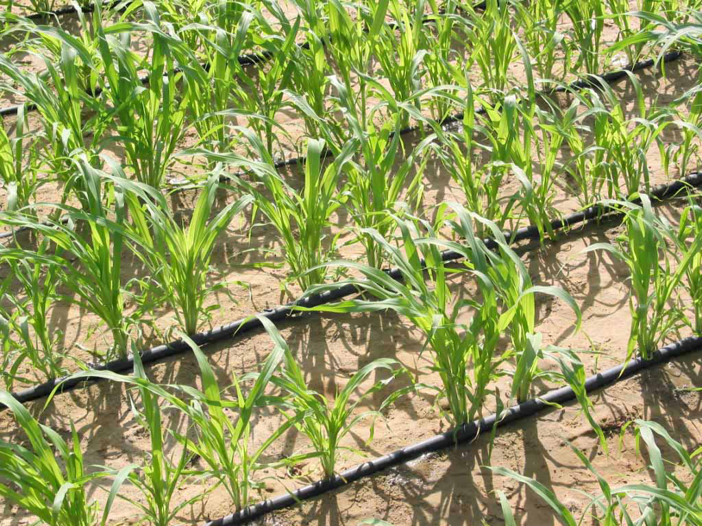

Water Conservation Techniques

A leading concern facing the future of agricultural production is the availability of water. It is expected that climate change will cause more extreme climate events including droughts and floods and shifts in plant growing zones. As populations grow, more efficient use of water in growing food will be of key importance.
Agriculture is done using both rainfed and irrigation farming. About 80 percent of globally cultivated land is done with rainfed farming, accounting for 60 percent of world food production. Using smart methods to enhance efficient and creative water use in rainfed agriculture has the potential to increase production.
Many of the methods known to conserve water and use it efficiently have been practiced for thousands of years in some very arid regions of the world with great success. The best systems require little maintenance while yielding maximum results. The ability to add water during crucial growth periods can greatly increase crop yields.
More Info